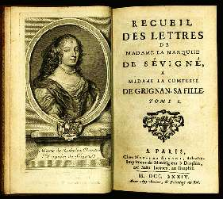

Борис Акунин
Мой календарь
Маркиза де Севинье появилась на свет 5 февраля 1626 года и дожила до семидесяти лет, совсем ничего не делая. Собственно, в ту эпоху благородной даме и не полагалось ничего делать, только быть супругой и рожать детей. Но в 24 года Мари овдовела. Ее ветреный муж был убит на дуэли после очередной интрижки.
Всю последующую жизнь мадам де Севинье общалась с друзьями и писала письма. Больше ничем не занималась.
Японцы считают, что человек, желающий прожить жизнь сполна, должен выбрать себе занятие, способное стать Путем.
Скучающая дама сделала своим Дао написание писем. Оказывается, можно и так. Этих эпистол сохранилось больше тысячи. Они создают яркий портрет эпохи и считаются сокровищем французской литературы.
Множество глубоких, остроумных, циничных фраз из наследия маркизы впоследствии стали знаменитыми цитатами.
«Чем больше я узнаю людей, тем больше люблю собак».
«Жизнь слишком коротка, чтобы совершать самоубийство. Имейте терпение».
«Мы всегда со стойкостью переносим несчастья других людей».
«Большинству женщин хватает ума, чтобы выбираться из самых трудных ситуаций. Если б еще хватало ума в них не попадать».
Ну и самый главный совет: «Кушайте шоколад, и самая противная компания покажется вам сносной».
Чему можно поучиться у Мари де Севинье? Тому, что для полноценной, осмысленной жизни тебе на самом деле ничего не нужно. У тебя всё и так есть - ты сам.